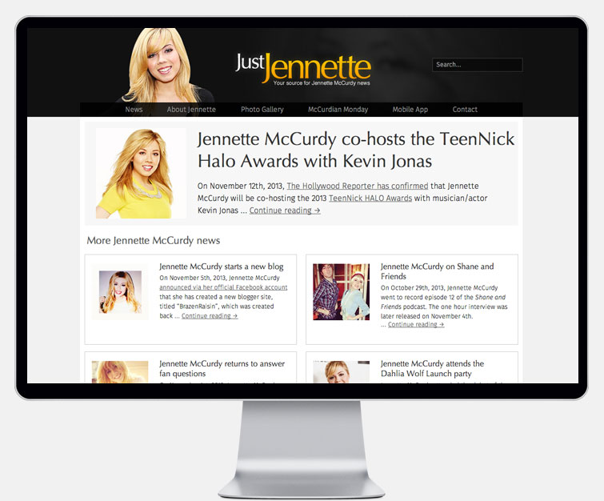
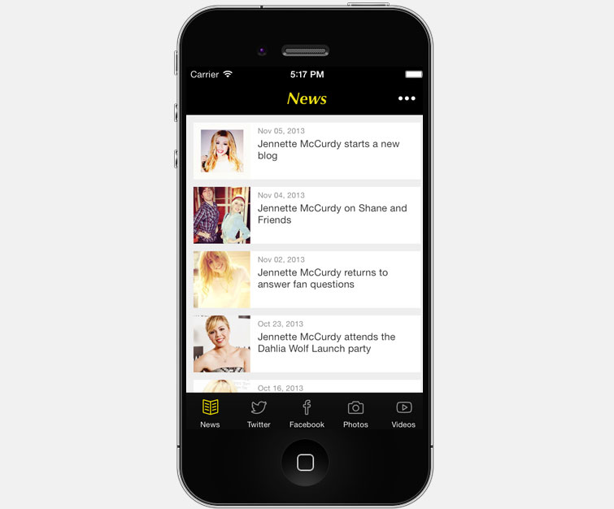

Work I've done
-
JustJennette
JustJennette is a fansite dedicated to the Nickelodeon celebrity actress Jennette McCurdy. Since it's debut in June 2010, JustJennette has been the most successful personal project to date. Under the hood, the custom layout was built for the Wordpress framework and optimized for responsive design with the aim of designing for mobile first. It is also utilizing Grunt for minification of object oriented Javascript/jQuery and SCSS compiling.
In addition to the website, there is a custom made iOS and Android app, named Jennapp. It's available now for both iPhone and Android devices.
- 

- 
-
JennetteMcCurdy.com
Concept web design along with a custom made logo. Utilizes full page sliding effects and transitions with CSS3 and integration with a custom JSON API from JustJennette for news source. The backend is hosted with AppFog using terminal commands and Git repositories.
-
WPGhost
Ghost has been widely spread as a solution to simple blogging, with Wordpress being viewed as a CMS (Content Management System).
During its early phase of being hidden from the public, I tried to re-create the front-end experience. Instead of using NodeJS for the backend, I recreated using Wordpress. It was a fun learning experience in Javascript navigation and helped me expand my knowledge of Markdown.
-
EIG Pattern Library
It's become standard practice for large companies to adapt a pattern library to avoid confusion between designers and developers. It helps simplify the process, avoid repeating styles, and prevent bad coding practices.
Hi there!
I'm a bay area resident, a recent graduate from Cal State East Bay, and a forward thinker. I've currently accumilated over 12 years of experience as a front end developer, graphic designer, and engineer. I've enjoyed every moment of it and waking up to new possibilities. I enjoy a challenge and am always up to the task of problem solving as the web evolves. I strive to learn new web technology as it continuously evolves.
What can I do for you:
Front end development
- HTML 5
- CSS 3 & SCSS
- Javascript & jQuery
- Adobe Photoshop CS5
- Grunt
- RequireJS
- Bootstrap & Foundation
Back end programming
- PHP
- MySQL
- mongoDB
- Git
- Wordpress/Ghost
Additional experience
- Responsive design
- API development with JSON output
- Titanium SDK
- iOS App development
- Android App development
- Worked with Instagram, Vine, Tumblr, and Youtube APIs
Looking for something specific?
I'm always interested in various web technologies and can help you with the specifics. Feel free to send me a quick message.